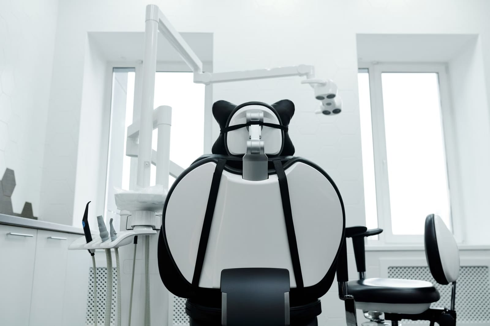
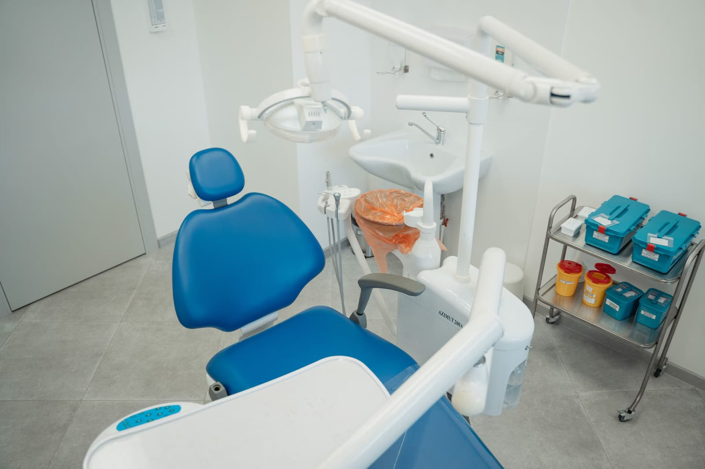

Muayenehanemiz hafta içi ve cumartesi gece 00:00'a, pazar 22:00'ye kadar açık. Size uygun saati birlikte belirleyelim.
Hangi tedavinin size uygun olduğuna muayeneden sonra, seçenekler anlatılarak birlikte karar verilir.
Ağız ve diş muayenesi, gerekli görülürse röntgen ve tedavi planı.
Çürük dokunun temizlenip dişin dolgu ile onarılması.
Dişin iç kısmındaki iltihabın temizlenmesi ve kanalların doldurulması.
Diş taşı ve plakların temizlenmesi, diş eti sağlığı için kontrol.
Kurtarılamayan ya da sorun çıkaran dişlerin çekimi.
Eksik dişler için sabit ya da hareketli protez seçenekleri.

Diş hekimine gitmekten çekinen pek çok kişi var. İlk ziyaretinizde sizi nelerin beklediği aşağıda.
Evet. Hafta içi ve cumartesi gece 00:00'a kadar, pazar 22:00'ye kadar açığız. Uygun saat için arayabilir ya da WhatsApp'tan yazabilirsiniz.
Çalışma saatlerimiz içinde arayın; durumunuzu dinleyip ne zaman gelebileceğinizi birlikte belirleyelim.
Kimliğiniz, varsa eski röntgenleriniz ve düzenli kullandığınız ilaçların listesi yeterlidir.
Tedavinin ücreti, muayeneden sonra belirlenen tedavi planına göre değişir. Muayenede size ayrıntılı bilgi verilir.
Cennet Mahallesi'nde, Hürriyet Caddesi'ne yakın.